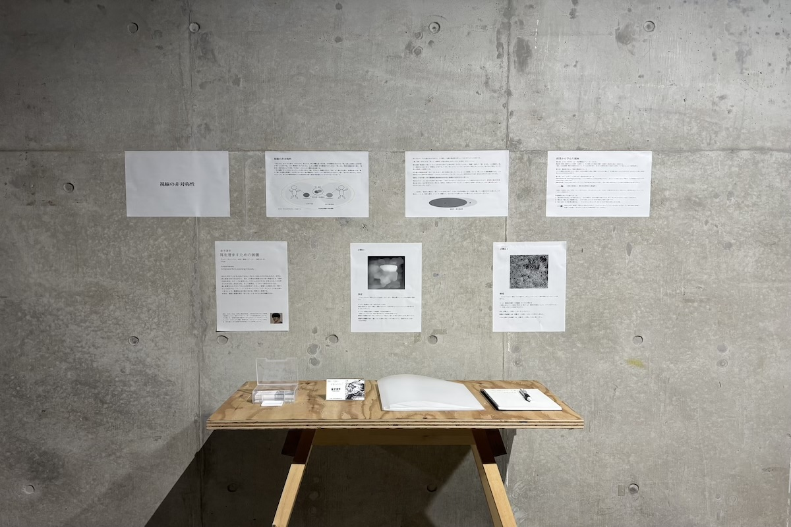

耳を澄ます為の装置

■ 作品要旨
あなたが見ている「私」は私ではない。「私」は、「あなたの中の私」なのだ。本作は、同じ事象を見つめながらも、個々人が異なる側面を切り取り物語化する「視線の非対称性」をテーマに制作した。「その人の中のそれ」があふれるこの世界で、これから先、あなたと私、そして世界は、どうやって歩むのだろうか。
奥に配置されたアルミパネルの「割り切れない」物理的な凸凹をデータ化し、音楽へと変換された「断片」として出力する。「モノ」としてのキャンバスと、「データ」としての音が重なり合うことで、鑑賞者は全体像の見えない複雑さに直面する。本作は、自身の主観的な物語と客観的な構造の間で「折り合い」をつけるための装置である。
■ 音の生成ルール
アルミパネルの形状データを読み取り、以下の仕組みで音に変換している。
- ① 起伏の深さ ＝ 和音の厚み
アルミの凸凹のデータが連続して偏ると、空間を漂う和音の層が最大10層まで増減し、響きが変化する。 - ② しわの密度 ＝ ビートの速さ
アルミのしわの細かさのデータが連続して偏ると、心臓の鼓動のようなビートを打つ速さが3段階に変化。
■ 技術スタック (Technical Stack)
- Software：Python（アルミの深度や密度をMIDI音源に変換）
- Hardware：論考、アルミパネル、黒色キャンバス、木枠、振動スピーカー（エキサイター）
